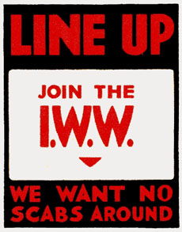
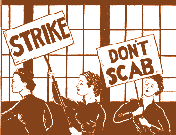
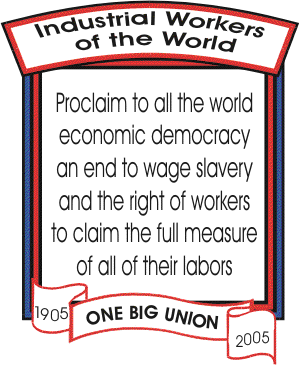

The Scab
By Jack London - A speech first given before the Oakland Socialist Party Local April 5, 1903 - Source: War of the Classes, Published 1905, New York: Macmillan Co.
 In a competitive society, where men struggle with one another for food and shelter, what is more natural than that of generosity, when it diminishes the food and shelter of men other than he who is generous, should be held an accursed thing? Wise old saws to the contrary, he who takes from a man's purse takes from his existence. To strike at a man's food and shelter is to strike at his life, and in a society organized on a tooth-and-nail basis, such an act, performed though it may be under the guise of generosity, is none the less menacing and terrible.
In a competitive society, where men struggle with one another for food and shelter, what is more natural than that of generosity, when it diminishes the food and shelter of men other than he who is generous, should be held an accursed thing? Wise old saws to the contrary, he who takes from a man's purse takes from his existence. To strike at a man's food and shelter is to strike at his life, and in a society organized on a tooth-and-nail basis, such an act, performed though it may be under the guise of generosity, is none the less menacing and terrible.
It is for this reason that a laborer is so fiercely hostile to another laborer who offers to work for less pay or longer hours. To hold his place (which is to live), he must offset this offer by another equally liberal, which is equivalent to giving away somewhat from the food and shelter he enjoys. To sell his day's work for two dollars instead of two dollars and a half means that he, his wife, and his children will not have so good a roof over their heads, such warm clothes on their backs, such substantial food in their stomachs. Meat will be bought less frequently, and it will be tougher and less nutritious; stout new shoes will go less often on the children's feed; and disease and death will be more imminent in a cheaper house and neighborhood.
Thus, the generous laborer, giving more of a day's work for less return (measured in terms of food and shelter), threatens the life of his less generous brother laborer, and, at the best, if he does not destroy that life, he diminishes it. Whereupon the less generous laborer looks upon him as an enemy, and, as men are inclined to do in a tooth-and-nail society, he tries to kill the man who is trying to kill him.
When a striker kills with a brick the man who has taken his place, he has no sense of wrong-doing. In the deepest holds of his being, though he does not reason the impulse, he has an ethical sanction. He feels dimly that he has justification, just as the home-defending Boer felt, though more sharply, with each bullet he fired at the invading English. Behind every brick thrown by a striker is the selfish "will to live" of himself and the slightly altruistic will to live of his family. The family-group came into the world before the state-group, and society being still on the primitive basis of tooth and nail, the will to live of the state is not so compelling to the striker as the will to live of his family and himself.
In addition to the use of bricks, clubs, and bullets, the selfish laborer finds it necessary to express his feelings in speech. Just as the peaceful country-dweller calls the sea-rover a "pirate," and the stout burgher calls the man who breaks into his strong-box a "robber," so the selfish laborer applies the opprobrious epithet "scab" to the laborer who takes from him food and shelter by being more generous in the disposal of his labor-power. The sentimental connotation of scab is as terrific as that of "traitor" or "Judas," and a sentimental definition would be as deep and varied as the human heart. It is far easier to arrive at what may be called a technical definition, worded in commercial terms, as, for instance, that a scab is one who gives more value for the same price than another.
The laborer who gives more time, or strength, or skill, for the same wage, than another, or equal time, or strength, or skill, for a less wage, is a scab. This generousness on his part is hurtful to his fellow laborers, for it compels them to an equal generousness which is not to their liking, and which gives them less of food and shelter. But a word may be said for the scab. Just as his act makes his rivals compulsorily generous, so do they, by fortune of birth and training, make compulsory his act of generousness. He does not scab because he wants to scab. No whim of the spirit, no burgeoning of the heart, leads him to give more of his labor-power than they for a certain sum.
It is because he cannot get work on the same terms as they that he is a scab. There is less work than there are men to do work. This is patent, else the scab would not loom so large on the labor-market horizon. Because they are stronger than he, or more skilled, or more fortunate, or more energetic, it is impossible for him to take their places at the same wage. To take their places he must give more value, must work longer hours, or receive a smaller wage. He does so, and he cannot help it, for his will to live is driving him on as well as they are being driven on by theirs, and to live he must win food and shelter, which he can do only by receiving permission to work from some man who owns a bit of land or piece of machinery. And to receive permission from this man, he must make the transaction profitable for him.
Viewed in this light, the scab who gives more labor-power for a certain price than his fellows is not so generous after all. He is no more generous with his energy than the chattel slave and the convict laborer, who, by the way, are the almost perfect scabs. They give their labor-power for about the minimum possible price. But, within limits, they may loaf and malinger, and, as scabs, are exceeded by the machine, which never loafs or malingers, and which is the ideally perfect scab.
It is not nice to be a scab. Not only is it not in good social taste and comradeship, but, from the standpoint of food and shelter, it is bad business policy. Nobody desires to scab, to give most for least. The ambition of every individual is quite the opposite,.to give least for most; and as a result, living in a tooth-and-nail society, battle royal is waged by the ambitious individuals. But in its most salient aspect, that of the struggle over the division of a joint-product, it is no longer a battle between individuals, but between groups of individuals. Capital and labor apply themselves to raw material, make something useful out of it, add to its value, and then proceed to quarrel over the division of the added value. Neither cares to give most for least. Each is intent on giving less than the other and on receiving more.
Labor combines into its unions; capital into partnerships, associations, corporations, and trusts. A group-struggle is the result, in which the individuals, as individuals, play no part. The Brotherhood of Carpenters and Joiners, for instance, serves notice on the Master Builders' Association that it demands an increase of the wage of its members from $3.50 a day to $4.00, and a Saturday half-holiday without pay. This means that the carpenters are trying to give less for more. Where they received $21.00 for six full days, they are endeavoring to get $22.00 for five days and a half, . that is, they will work half a day less each week and receive a dollar more.
Also, they expect the Saturday half-holiday to give work to one additional man for each eleven previously employed. This last affords a splendid example of the development of the group idea. In this particular struggle the individual has no chance at all for life. The individual carpenter would be crushed like a mote by the Master Builders' Association, and like a mote the individual master builder would be crushed by the Brotherhood of Carpenters and Joiners.
In the group-struggle over the division of the joint-product, labor utilizes the union with its two great weapons, . the strike and boycott; while capital utilizes the trust and association, the weapons of which are the blacklist, the lockout, and the scab. The scab is by far the most formidable of the three. He is the man who breaks strikes and causes all the trouble. Without him there would be no trouble, for the strikers are willing to remain out peacefully and indefinitely so long as other men are not in their places, and so long as the particular aggregation of capital with which they are fighting is eating its head off in enforced idleness.
But both warring groups have reserve weapons up their sleeves. Were it not for the scab, these weapons would not be brought into play. But the scab takes the places of the strikers, who begin at once to wield a most powerful weapon, -- terrorism. The will to live of the scab recoils from the menace of broken bones and violent death. With all due respect to the labor leaders, who are not to be blamed for volubly asseverating otherwise, terrorism is a well-defined and eminently successful policy of the labor unions. It has probably won them more strikes than all the rest of the weapons in their arsenal. This terrorism, however, must be clearly understood. It is directed solely against the scab, placing him in such fear for life and limb as to drive him out of the contest. But when terrorism gets out of hand and inoffensive non-combatants are injured, law and order threatened, and property destroyed, it becomes and edged tool that cuts both ways. This sort of terrorism is sincerely deplored by the labor leaders, for it has probably lost them as many strikes as have been lost by any other single cause.
The scab is powerless under terrorism. As a rule he is not so good or gritty a man as the men he is displacing, and he lacks their fighting organization. He stands in dire need of stiffening and backing. His employers, the capitalists, draw their two remaining weapons, the ownership of which is debatable, but which they for the time being happen to control. These two weapons may be called the political and judicial machinery of society. When the scab crumples up and is ready to go down before the fists, bricks, and bullets of the labor-group, the capitalist-group puts the police and soldiers into the field, and begins a general bombardment of injunctions. Victory usually follows, for the labor-group cannot withstand the combined assault of gatling guns and injunctions.
But it has been noted that the ownership of the political and judicial machinery of society is debatable. In the Titanic struggle over the division of the joint-product, each group reaches out for every available weapon. Nor are they blinded by the smoke of conflict. They fight their battles as coolly and collectedly as ever battles were fought on paper. The capitalist-group has long since realized the immense importance of controlling the political and judicial machinery of society. Taught by gatlings and injunctions, which have smashed many an otherwise successful strike, the labor-group is beginning to realize that it all depends who is behind and who is before those weapons. And he who knows the labor-movement knows that there is slowly growing up and being formulated a clear, definite policy for the capture of the political and judicial machinery.
This is the terrible spectre which Mr. John Graham Brooks sees looming portentously over the twentieth-century world. No man may boast a more intimate knowledge of the labor-movement than he, and he reiterates again and again the dangerous likelihood of the whole labor-group capturing the political machinery of society. As he says in his recent book: [The Social Unrest. New York: The Macmillan Co. 1903]
"It is not probable that employers can destroy unionism in the United States. Adroit and desperate attempts will, however, be made, if we mean by unionism the undisciplined and aggressive fact of vigorous and determined organizations. If capital should prove too strong in this struggle, the result is easy to predict. The employers have only to convince organized labor that it cannot hold its own against the capitalist manager, and the whole energy that now goes to the union will turn to an aggressive political socialism. It will not be the harmless sympathy with increase city and state functions which trade unions already feel; it will become a turbulent political force bent upon using every weapon of taxation against the rich."
This struggle not to be a scab, to avoid giving more for less, and to succeed in giving less for more, is more vital than it would appear on the surface. The capitalist and labor groups are locked together in desperate battle, and neither side is swayed by moral considerations more than skin-deep. The labor-group hires business agents, lawyers, and organizers; and is beginning to intimidate legislators by the strength of its solid vote, and more directly, in the near future, it will attempt to control legislation by capturing it bodily through the ballot-box. On the other hand, the capitalist-group, numerically weaker, hires newspapers, universities, and legislatures, and strives to bend to its need all the forces which go to mould public opinion.
The only honest morality displayed by either side is white-hot indignation at the iniquities of the other side. The striking teamster complacently takes a scab driver into an alley and with an iron bar breaks his arms to that he can drive no more, but cries out to high heaven for justice when the capitalist breaks his skull by means of a cub in the hands of a policeman. Nay, the members of a union will declaim in impassioned rhetoric for the God-given right of an eight-hour day, and at the time be working their own business against seventeen hours out of the twenty-four.
A capitalist, such as the late Collis P. Huntington, and his name is Legion, after a long life spent in buying the aid of countless legislatures, will wax virtuously wrathful and condemn in unmeasured terms "the dangerous tendency of crying out to the government for aid" in the way of labor legislation. Without a quiver, a member of the capitalist-group will run tens of thousands of pitiful child-laborers through his life-destroying cotton factories, and weep maudlin and Constitutional tears over one scab hit in the back with a brick. He will drive a "compulsory" free contract with an unorganized laborer on the basis of a starvation wage, saying, "Take it or leave it," knowing that to leave it means to die of hunger; and in the next breath, when the organizer entices that laborer into a union, will storm patriotically about the inalienable rights of all men to work. In short, the chief moral concern of either side is with the morals of the other side. They are not in the business for their moral welfare, but to achieve the enviable position of the non-scab who gets more than he gives.
But there is more to the question than has yet been discussed. The labor scab is no more detestable to his brother laborers than is the capitalist scab to his brother capitalists. A capitalist may get most for least in dealing with his laborers, and in so far be a non-scab; but at the same time, in his dealings with his fellow capitalists, he may give most for least and be the very worst kind of scab. The most heinous crime an employer of labor can commit is to scab on his fellow employers of labor. Just as the individual laborers have organized into groups to protect themselves from the peril of the scab laborer, so have the employers organized into groups to protect themselves from the peril of the scab employer. The employers' federations, associations, and trusts are nothing more or less than unions. They are organized to destroy scabbing amongst themselves and to encourage scabbing amongst others. For this reason they pool interests, determine prices, and present an unbroken and aggressive front to the labor-group.
As has been said before, nobody likes to play the compulsorily generous rôle of a scab. It is a bad business proposition on the face of it. And it is patent that there would be no capitalist scabs if there were not more capital than there is work for capital to do. When there are enough factories in existence to supply, with occasional stoppages, a certain commodity, the building of new factories, by a rival concern, for the production of that commodity, is plain advertisement that that capital is out of a job. The first act of this new aggregation of capital will be to cut prices, to give more for less; in short, to scab, to strike at the very existence of the less generous aggregation of capital, the work of which it is trying to do.
No scab capitalist strives to give more for less for any other reason than that he hopes, by undercutting a competitor and driving that competitor out of the market, to get that market and its profits for himself. His ambition is to achieve the day when he shall stand alone in the field both as buyer and seller, when he will be the royal non-scab, buying most for least, selling least for most, and reducing all about him, the small buyers and sellers (the consumers and the laborers), to a general condition of scabdom. This, for example, has been the history of Mr. Rockefeller and the Standard Oil Company. Through all the sordid economies of scabdom he has passed until to-day he is a most regal non-scab. However, to continue in this enviable position, he must be prepared at a moment's notice to go scabbing again. And he is prepared. Whenever a competitor arises, Mr. Rockefeller changes about from giving least for most, and gives most for least with such a vengeance as to drive the competitor out of existence.
The banded capitalists discriminate against a scab capitalist by refusing him trade advantages, and by combining against him in most relentless fashion. The banded laborers, discriminating against a scab laborer in more primitive fashion, with a club, are no more merciless than the banded capitalists.
Mr. Casson tells of a New York capitalist, who withdrew from the Sugar Union several years ago and became a scab. He was worth something like twenty millions of dollars. But the Sugar Union, standing shoulder to shoulder with the Railroad Union and several others, beat him to his knees till he cried enough. So frightfully did they beat him that he was obliged to turn over to his creditors his home, his chickens, and his gold watch. In point of fact, he was as thoroughly bludgeoned by the Federation of Capitalist Unions as ever scab workman was bludgeoned by a labor union. The intent in either case is the same, to destroy the scab's producing power. The labor scab with concussion of the brain is put out of business, and so is the capitalist scab who has lost all his dollars down to his chickens and his watch.
But the rôle of scab passes beyond the individual. Just as individuals scab on other individuals, so do groups scab on other groups. And the principle involved is precisely the same as in the case of the simple labor scab. A group, in the nature of its organization, is often compelled to give most for least, and, so doing, to strike at the life of another group. At the present moment all Europe is appalled by that colossal scab, the United States. And Europe is clamorous with agitation for a Federation of National Unions to protect her from the United States. It may be noted, in passing, that in its prime essentials this agitation in no wise differs from the trade union agitation among workmen in any industry. The trouble is caused by the scab who is giving most for least. The result of the American Scab's nefarious actions will be to strike at the food and shelter of Europe. The way for Europe to protect herself is to quit bickering among her parts and to form a union against the Scab. And if the union is formed, armies and navies may be expected to be brought into play in fashion similar to the bricks and clubs in ordinary labor struggles.
In this connection, and as one of many walking delegates from the nations, M. Leroy-Beaulieu, the noted French economist, may well be quoted. In a letter to the Vienna Tageblatt, he advocates an economic alliance among the Continental nations for the purpose of barring out American goods, an economic alliance, in his own language, "which may possibly and desirably develop into a political alliance."
It will be noted in the utterances of the Continental walking delegates that, one and all, they leave England out of the proposed union. And in England herself the feeling is growing that her days are numbered if she cannot unite for offense and defense with the great American Scab. As Andrew Carnegie said some time ago, "The only course for Great Britain seems to be reunion with her grandchild, or sure decline to a secondary place, and then to comparative insignificance in the future annals of the English-speaking race."
Cecil Rhodes, speaking of what would have obtained but for the pig-headedness of George III., and of what will obtain when England and the United States are united, said, "No cannon would . . . be fired on either hemisphere but by permission of the English race." It would seem that England, fronted by the hostile Continental Union and flanked by the great American Scab, has nothing left but to join with the Scab and play the historic labor-rôle of armed Pinkerton. Granting the words of Cecil Rhodes, the United States would be enabled to scab without let or hindrance on Europe, while England, as professional strike-breaker and policeman, destroyed the unions and kept order.
All this may appear fantastic and erroneous, but there is in it a soul of truth vastly more significant than it may seem. Civilization may be expressed to-day in terms of trade unionism. Individual struggles increase prodigiously. And the things for which the groups struggle are the same as of old. Shorn of all subtleties and complexities, the chief struggle of men, and of groups of men, is for food and shelter. And, as of old they struggled with tooth and nail, so to-day they struggle, with teeth and nails elongated into armies and navies, machines, and economic advantages.
Under the definition that a scab is one who gives more value for the same price than another, it would seem that society can be generally divided into the two classes of the scabs and the non-scabs. But on closer investigation, however, it will be seen that the non-scab is almost a vanishing quantity. In the social jungle everybody is preying upon everybody else. As in the case of Mr. Rockefeller, he who was a scab yesterday is a non-scab to-day, and to-morrow may be a scab again.
The woman stenographer or bookkeeper who receives forty dollars per month where a man was receiving seventy-five is a scab. So is the woman who does a man's work at a weaving machine, and the child who goes into the mill or factory. And the father, who is scabbed out of work by the wives and children of other men, sends his own wife and children to scab in order to save himself.
When a publisher offers an author better royalties than other publishers have been paying him, he is scabbing on those other publishers. The reporter on a newspaper who feels he should be receiving a larger salary for his work, says so, and is shown the door, is replaced by a reporter who is a scab; whereupon, when the belly-need presses, the displaced reporter goes to another paper and scabs himself. The minister who hardens his heart to a call, and waits for a certain congregation to offer him say five hundred a year more, often finds himself scabbed upon by another and more impecunious minister; and the next time it is his turn to scab while a brother minister is hardening his heart to a call. The scab is everywhere. The professional strike-breakers, who, as a class, receive large wages, will scab on one another, while scab unions are even formed to prevent scabbing upon scabs.
There are non-scabs, but they are usually born so, and are protected by the whole might of society in the possession of their food and shelter. King Edward is such a type, as are all individuals who receive hereditary food-and-shelter privileges, such as the present Duke of Bedford, for instance, who yearly receives $75,000 from the good people of London because some former king gave some former ancestor of his the market privileges of Covent Garden. The irresponsible rich are likewise non-scabs, and by them is meant that coupon-clipping class which hires its managers and brains to invest the money usually left it by its ancestors.
Outside these lucky creatures, all the rest, at one time or another in their lives, are scabs, at one time or another are engaged in giving more for a certain price than any one else. The meek professor in some endowed institution, by his meek suppression of his convictions, is giving more for his salary than the other more outspoken professor gave, whose chair he occupies. And when a political party dangles a full dinner-pail in the eyes of the toiling masses, it is offering more for a vote than the dubious dollar of the opposing party. Even a money-lender is not above taking a slightly lower rate of interest and saying nothing about it.
Such is the tangle of conflicting interests in a tooth-and-nail society that people cannot avoid being scabs, are often made so against their desires, and unconsciously. When several trades in a certain locality demand and receive an advance in wages, they are unwittingly making scabs of their fellow laborers in that district who have received no advance in wages. In San Francisco the barbers, laundry workers, and milk-wagon drivers received such an advance in wages. Their employers promptly added the amount of this advance to the selling price of their wares. The price of shaves, of washing, and of milk went up. This reduced the purchasing power of the unorganized laborers, and, in point of fact, reduced their wages and made them greater scabs.
Because the British laborer is disinclined to scab, that is, because he restricts his output in order to give less for the wage he receives, it is to a certain extent made possible for the American capitalist, who receives a less restricted output from his laborers, to play the scab on the English capitalist. As a result of this (or course, combined with other causes), the American capitalist and the American laborer are striking at the food and shelter of the English capitalist and laborer.
The English laborer is starving to-day because, among other things, he is not a scab. He practices the policy of "Ca' Canny," which may be defined as "go easy." In order to get most for least, in many trades he performs but from one fourth to one sixth of the labor he is well able to perform. An instance of this is found in the building of the Westinghouse Electric Works at Manchester. The British limit per man was 400 bricks per day. The Westinghouse Company imported a "driving" American contractor aided by half-a-dozen "driving" American foremen, and the British bricklayer swiftly attained an average of 1800 bricks per day, with a maximum of 2500 bricks for the plainest work.
But the British laborer's policy of Ca' Canny, which is the very honorable one of giving least for most, and which is likewise the policy of the English capitalist, is nevertheless frowned upon by the English capitalist whose business existence is threatened by the great American Scab. From the rise of the factory system, the English capitalist gladly embraced the opportunity, wherever he found it, of giving least for most. He did it all over the world wherever he enjoyed a market monopoly, and he did it at home, with the laborers employed in his mills, destroying them like flies till prevented, within limits, by the passage of the Factory Acts. Some of the proudest fortunes of England to-day may trace their origin to the giving of least for most to the miserable slaves of the factory towns. But at the present time the English capitalist is outraged because his laborers are employing against him precisely the same policy he employed against them, and which he would employ again did the chance present itself.
Yet Ca' Canny is a disastrous thing to the British laborer. It has driven ship-building from England to Scotland, bottle-making from Scotland to Belgium, flint-glass-making from England to Germany, and to-day it is steadily driving industry after industry to other countries. A correspondent from Northampton wrote not long ago: "Factories are working half and third time. . . . There is no strike, there is no real labor trouble, but the masters and men are alike suffering from sheer lack of employment. Markets which were once theirs are now American." It would seem that the unfortunate British laborer is 'twixt the devil and the deep sea. If he gives most for least, he faces a frightful slavery such as marked the beginning of the factory system. If he gives least for most, he drives industry away to other countries, and has no work at all.
But the union laborers of the United States have nothing to boast of, while, according to their trade-union ethics, they have a great deal of which to be ashamed. They passionately preach short hours and big wages, the shorter the hours and the bigger the wages the better. Their hatred for a scab is as terrible as the hatred of a patriot for a traitor, of a Christian for a Judas. And in the face of all this they are as colossal scabs as the United States is a colossal scab. For all of their boasted unions and high labor-ideals, they are about the most thorough-going scabs on the planet.
Receiving $4.50 per day, because of his proficiency and immense working power, the American laborer has been known to scab upon scabs (so called) who took his place and receive only $.90 per day for a longer day. In this particular instance, five Chinese coolies, working longer hours, gave less value for the price receive from their employer than did one American laborer.
It is upon his brother laborers overseas that the American laborer most outrageously scabs. As Mr. Casson has shown, an English nailmaker get $3.00 per week, while an American nailmaker gets $30.00. But the English worker turns out 200 pounds of nails per week, while the American turns out 5500 pounds. If he were as "fair" as his English brother, other things being equal, he would be receiving, at the English worker's rate of pay, $82.50. As it is, he is scabbing upon his English brother to the tune of $79.50 per week. Dr. Schultze-Gaevernitz has shown that a German weaver produces 466 yards of cotton a week at a cost of .303 per yard, while an American weaver produces 1200 yards at a cost of .02 per yard.
But, it may be objected, a great part of this is due to the more improved American machinery. Very true; but, none the less, a great part is still due to the superior energy, skill, and willingness of the American laborer. The English laborer is faithful to the policy of Ca' Canny. He refuses point blank to get the work out of a machine that the New World scab gets out of a machine. Mr. Maxim, observing a wasteful hand-labor process in his English factory, invented a machine which he proved capable of displacing several men. But workman after workman was put at the machine, and without exception they turned out neither more nor less than a workman turned out by hand. They obeyed the mandate of the union and went easy, while Mr. Maxim gave up in despair. Nor will the British workman run machines at as high speed as the American, nor will he run so many. An American workman will "give equal attention simultaneously to three, four, or six machines or tools, while the British workman is compelled by his trade union to limit his attention to one, so that employment may be given to half-a-dozen men."
But to scabbing, no blame attaches itself anywhere. All the world is a scab, and, with rare exceptions, all the people in it are scabs. The strong, capable workman gets a job and holds it because of his strength and capacity. And he holds it because out of his strength and capacity he gives a better value for his wage than does the weaker and less capable workman. Therefore he is scabbing upon his weaker and less capable brother workman. This is incontrovertible. He is giving more value for the price paid by the employer.
The superior workman scabs upon the inferior workman because he is so constituted and cannot help it. The one, by fortune of birth and upbringing, is strong and capable; the other, by fortune of birth and upbringing, is not so strong or capable. It is for the same reason that one country scabs upon another. That country which has the good fortune to possess great natural resources, a finer sun and soil, unhampering institutions, and a deft and intelligent labor class and capitalist class, is bound to scab upon a country less fortunately situated. It is the good fortune of the United States that is making her the colossal scab, just as it is the good fortune of one man to be born with a straight back while his brother is born with a hump.
It is not good to give most for least, not good to be a scab. The word has gained universal opprobrium. On the other hand, to be a non-scab, to give least for most, is universally branded as stingy, selfish, and unchristian-like. So all the world, like the British workman, is 'twixt the devil and the deep sea. It is treason to one's fellows to scab, it is treason to God and unchristian-like not to scab.
Since to give least for most and to give most for least are universally bad, what remains? Equity remains, which is to give like for like, the same for the same, neither more nor less. But this equity, society, as at present constituted, cannot give. It is not in the nature of present-day society for men to give like for like, the same for the same. And as long as men continue to live in this competitive society, struggling tooth and nail with one another for food and shelter (which is to struggle tooth and nail with one another for life), that long will the scab continue to exist. His will to live will force him to exist. He may be flouted and jeered by his brothers, he may be beaten with bricks and clubs by the men who by superior strength and capacity scab upon him as he scabs upon them by longer hours and smaller wages, but through it all he will persist, going them one better, and giving a bit more of most for least than they are giving.